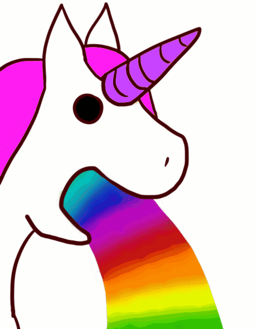

La licorne est un animal féérique, fabuleux et fantastique qui vivait dans les forêts enchantées. La licorne a un splendide corps de cheval blanc. Elle porte une corne torsadée unique au milieu du front, souvent dorée. La licorne se déplace avec une rapidité extraordinaire.
Elle est très difficile à apprivoiser et si on la capture elle meurt de tristesse. Elle se méfie des hommes qui l'ont souvent chassé pour récupérer sa corne. Sa corne aurait des pouvoirs magiques, elle pourrait guérir des maladies et annuler les effets des poisons. La corne de licorne rend aussi l'eau sale, propre et limpide.
Parce que les hommes l'ont chassé, elle les fuit et préfère la compagnie des autres animaux de la forêt. Elle aime beaucoup les oiseaux et elle les laisse se percher sur sa corne pour écouter leurs chants. Elle est sauvage et seuls les dieux de la mythologie grecque pouvaient monter sur son dos. Chez les humains, seule une jeune fille innocente peut l'approcher et se faire aimer d'elle. Elle vient alors poser doucement sa tête sur ses genoux et se laisse caresser.
